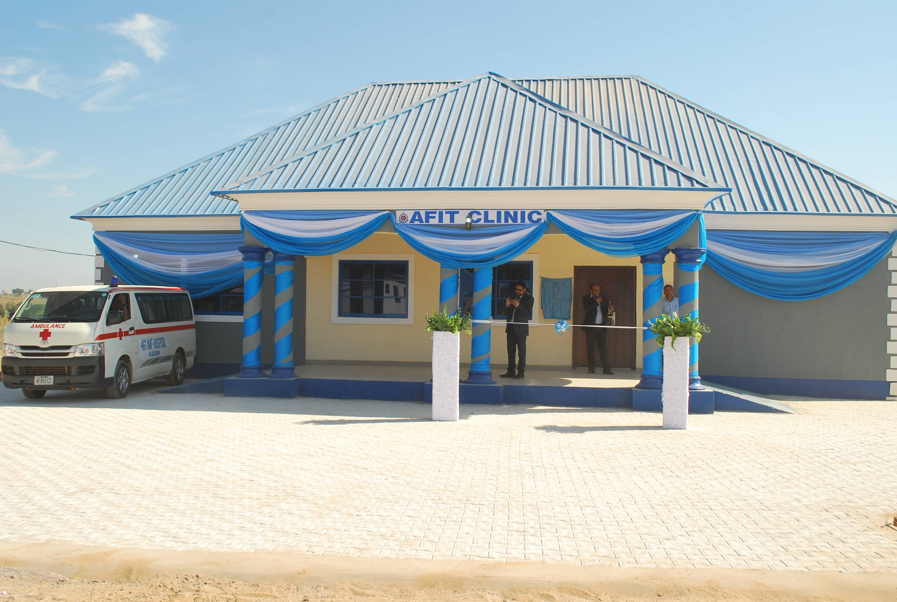
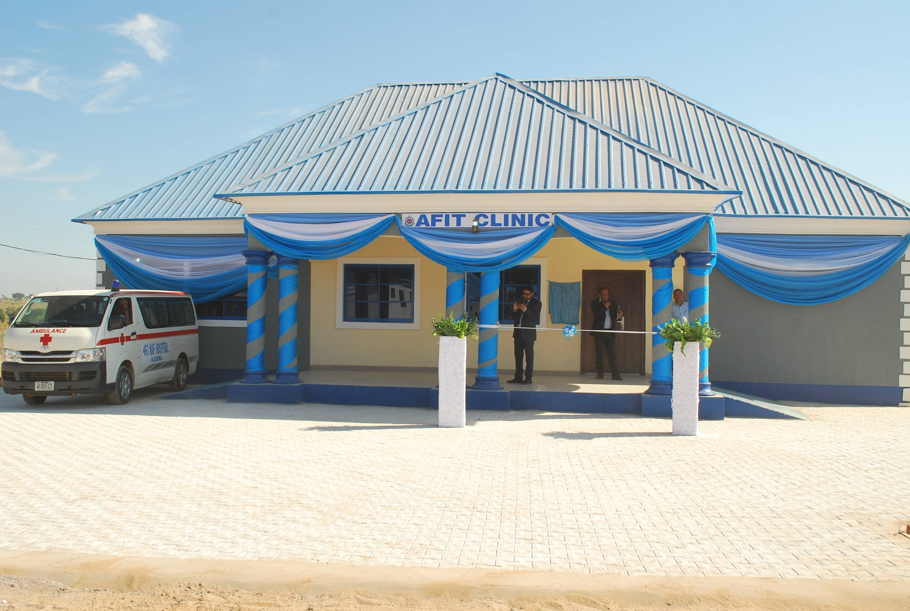
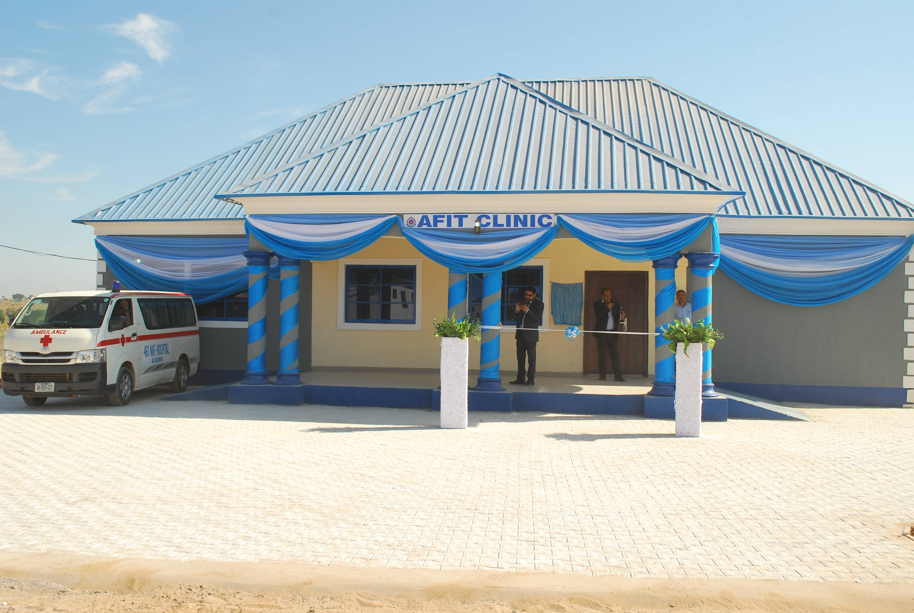
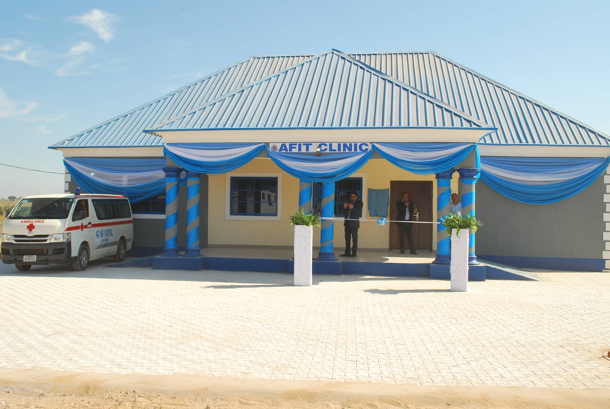

.jpg) 

.jpg) 

The Air Force Institute of Technology (AFIT) Nigeria is a tertiary institution under the Nigerian Air Force (NAF). Established in 1977, AFIT is located in Kaduna, Nigeria, and serves as a center for the development of technical manpower for the Nigerian Air Force and other branches of the Nigerian Armed Forces. AFIT Nigeria offers a range of academic programs and professional courses in various fields of engineering, sciences, and management. The institution provides undergraduate and postgraduate programs leading to the award of Bachelor's, Master's, and Doctoral degrees. Some of the disciplines covered at AFIT Nigeria include aerospace engineering, electrical/electronic engineering, mechanical engineering, computer science, and logistics. The primary mission of AFIT Nigeria is to provide specialized technical education, research, and training to meet the specific needs of the Nigerian Air Force and the Nigerian Armed Forces as a whole. The institution places a strong emphasis on the practical application of knowledge and skills, with the goal of producing skilled personnel capable of supporting defense and national security efforts. AFIT Nigeria collaborates with other Nigerian universities, industry partners, and international institutions to enhance the quality of its programs and research endeavors. The institution also engages in research and development activities to address technological challenges in the defense sector and contribute to national development. In summary, AFIT Nigeria serves as a premier educational institution within the Nigerian Air Force, providing specialized technical training and education in various disciplines. It plays a vital role in producing skilled personnel to support defense operations and contributes to the overall development of Nigeria's defense capabilities.
To transform the Air Force Institute of Technology into a global center of multi-Ddisciplinary academic and research excellence whilst functioning as the prime technical manpower development resources of nigerian Air ForceThe Commandant stated stated that the Institute can maintain her position as the nation’s top aviation institution through seminars, short courses and trainings by focusing on areas of Unmanned Aerial Vehicles (UAV) Integration Power, Artificial Intelligence (AI), Computer-Aided Design (CAD) Finite Element Analysis and Computational Fluid Dynamics. Other areas of focus include Aviation safety seminars, Gas Turbine or Power seminars. He also noted that the suggested seminars and trainings can be conducted locally or internationally to further drive visibility for the Institute.The Commandant further stated that the Institute can maintain her position as the nation’s top aviation institution through seminars, short courses and trainings by focusing on areas of Unmanned Aerial Vehicles (UAV) Integration Power, Artificial Intelligence (AI), Computer-Aided Design (CAD) Finite Element Analysis and Computational Fluid Dynamics. Other areas of focus include Aviation safety seminars, Gas Turbine or Power seminars. He also noted that the suggested seminars and trainings can be conducted locally or internationally to further drive visibility for the Institute.